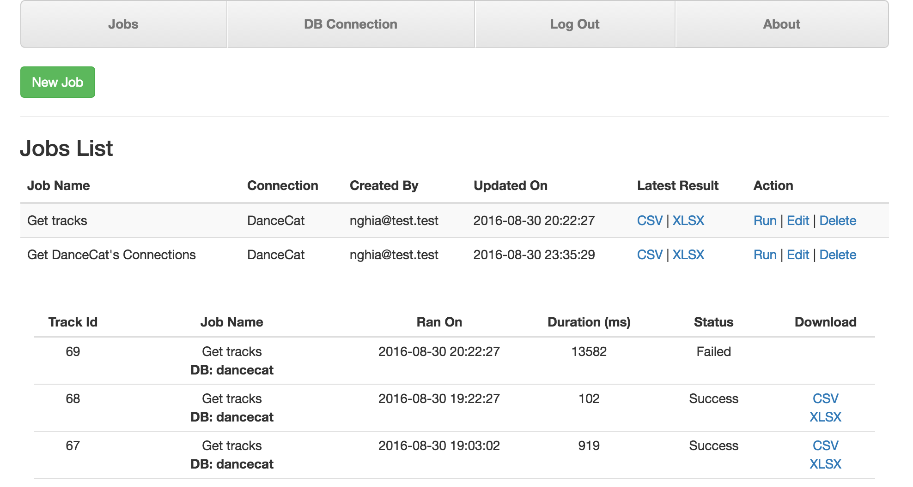
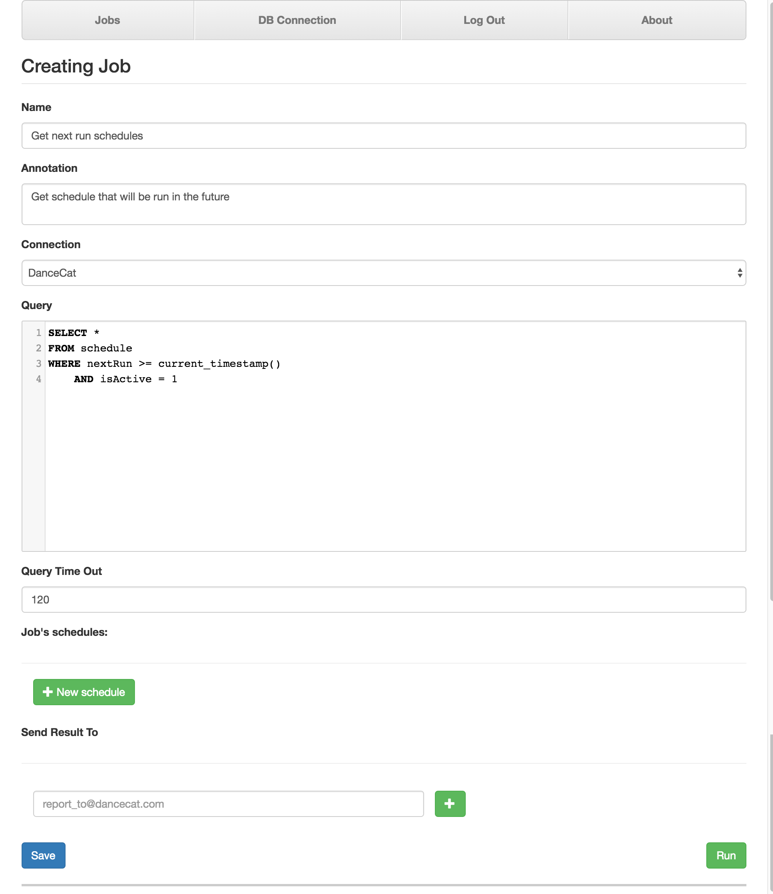

Jobs and Scheduling¶
Create a new Job¶
In your DanceCat site, go to Job tab.
Here you will see a list of Jobs and their trackers. Firstly, add a new job by click on New Job button. You will see a Creating Job form. Begin with filling in the necessary information include job’s name, query statement and annotation (if needed), choose the right connection like this example:
Your job is now can be saved, but just wait a moment, try out your query by click on Run button. DanceCat will start querying your statement against the chosen connection, just for the first 100 lines. Remember this number? You can config it by the value of QUERY_TEST_LIMIT.

Note: You won’t be able to get password, secret or related data, DanceCat will detect and get rid of them before they reach your hand.
Retrieving results¶
Save your new Job and return to the Job list page. On the line of your new job, click on the Run link to trigger that job. You will notice that there will be a new tracker line after a short moment. Wait for your job to finish with links to download result file in CSV and XLSX format.
- Twos in the job line which allow you to download latest result.
- Twos in the tracker lines which allow you to download that execution’s result.
You can event get results in JSON format, simplify go to the URL like this example:

Finally, you can edit your jobs, add an email so that DanceCat can send you result every time that job finish.
Note: Job’s results have a limited time to live. After spending the given time, they will be expired and you won’t be able to retrieve them. Config this number by setting the value of JOB_RESULT_VALID_SECONDS
Scheduling¶
Scheduling allow you to run your job once, hourly, daily, weekly and monthly. With this, you don’t have to go to your DanceCat site every time you need to get reports.
To scheduling your job, go to the Jobs list page, click on Edit link to edit it. Next, on the Job’s editing form, click on New schedule button to add new schedule. Edit information that suite your needs, then check in Active check box to active it. If you want to remove a schedule, just click on “X” sign in the top-right of the schedule’s form.

After finished, the schedule look like this:

Click Save to save your changes.
How schedules work?
There are a process querying the DanceCat database for every n interval seconds (default n = 60) to check if there is any schedule is set to run on next n seconds. Those scheduled jobs will be run and the schedules’ next run time will be update.
Update outdated schedules
For some reason your DanceCat was shutdown, after restart, you need to run following commands to update the outdated schedules:
su - dancecat
cd /opt/dancecat
export CONFIG_FILE=/etc/dancecat/config.cfg
python DanceCat/Console schedule_update